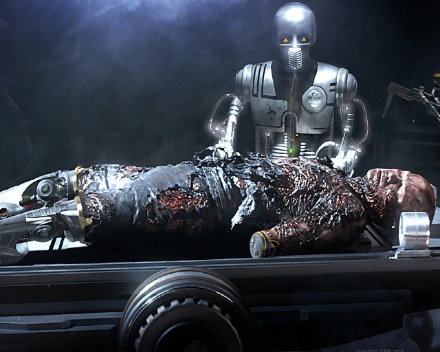

History

When the plans for the Death Star were stolen, Vader would take action
to clean up Krennic's mess, personally slaughtering a squad of rebel soldiers
and leading the hunt for the data tapes.
Nineteen years after his battle with Obi-Wan Kenobi, Darth Vader remained the
Empire’s tyrannical hand. Upon the Rebel Alliance’s theft of schematics for the
Empire’s ultimate weapon, the planet-sized Death Star, Vader led an attack on
a suspected Rebel vessel, seeking to recover the stolen plans and find the
location of the Rebel base. Meanwhile, Rebel leader Princess Leia hid the
data tapes -- and a distress message -- inside the droid R2-D2, sending him
to Tatooine in search of Obi-Wan Kenobi. Vader and his stormtroopers killed
all aboard with the exception of the Princess, opting to take her to the Death
Star for interrogation. Leia proved able to resist a mind probe, and Obi-Wan
Kenobi, having received Artoo’s message, soon arrived with the astromech,
Luke Skywalker, Han Solo, Chewbacca, and C-3PO. Vader and Obi-Wan clashed one
last time, with the Sith Lord striking down his former Master. Luke, Leia,
and the heroes were able to escape, but only because the Empire allowed it:
Vader had placed a tracking device on their ship, which led the Empire to
the Rebel’s secret base. As the Death Star closed in, the Rebels mounted
an attack, with Vader himself entering the fray in his TIE Advanced starfighter.
Streaming through the Death Star trench and about to finish off the last of
the Rebels -- Luke Skywalker in his X-wing -- Vader and his wingmen were attacked
from behind by the Millennium Falcon. Ricocheted away from the Death Star and
spun out of control, Vader was unable to stop Luke. The space station was
destroyed, but Vader survived, and he flew into the far reaches of space.